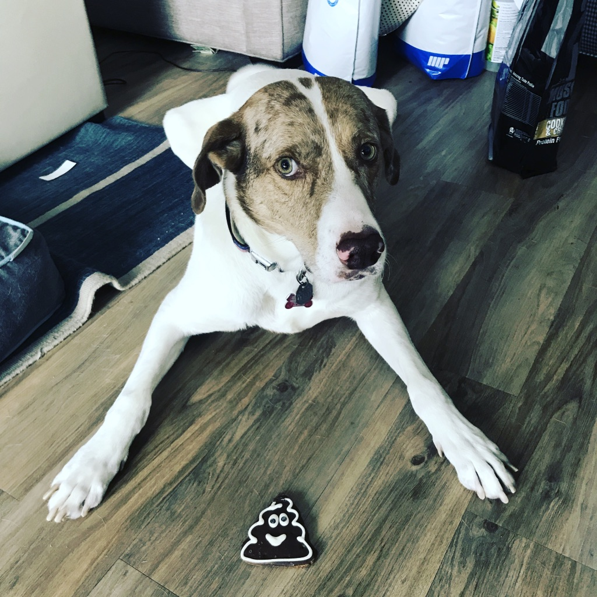

Skylord 'Carrot Cake' Perry's Adoption Story
Skylord Perry was adopted in April 2016 into the family of Jack Perry. Sky started his life with many challenges. To start Skylord had no family, he was all alone in New Mexico near Artesia when before he was rescued. He was a part of a dog gang called the Barkandits. Specifically, he was their Alert Dog. Unfortunately, this job came with a lot of hard tasks; as a result, he sustained a major injury under his right front arm. This injury was a major cut in his arm, which no vets could close. When Jack came to rescue Skylord, Skylord was praying that Jack wouldn't judge him based on this flaw he had with his arm. Jack called the shelter where Skylord was located at and scheduled a meet and greet, Skylord had three days prepare for this meet and greet. Sky and Jack both did not know that they were meet their soul mate at the time.
Always stay strong, life will get tough. You never know when you might run into someone that'll love you more than everyone you have ever met combined.
It was April 2016 in Colorado Springs, CO. Skylord Perry had three days until he was going to meet Jack Perry. Skylord, known as 'Whiskey' at the time, prepared by drinking lots and lots of water and staying hydrated. When the day came that he was going to be interviewed by Jack, he had dranken 2 gallons of water. Anthony, the owner at the time of No Hounds Unhomed, met with Jack beforehand and talked him through what they knew about Whiskey's past and one thing that he mentioned was that he failed his first home visit with a potential adopter. Jack was starting to get nervous about the whole situation. He was 21 years old at a dog rescue without his parent's knowledge, and with little money for an adoption fee. Was this the right choice? Meanwhile Whiskey was drinking water in the back in his room prepping to meet Jack. It was almost time.
Give a dog a piece of carrot cake and you make the dog happy. Teach a dog to bake carrot cake, then you have a dirty kitchen.
After talking to Anthony, Jack pulled up to Camp Bow Wow in Colorado Springs, where Whiskey, soon to be Skylord, was located. Jack
was wearing his usual weekday outfit, which consisted of a collared shirt, jeans, and sperry's with no socks on. Whiskey heard Anthony
coming towards him and immediately knew that it was time. Whiskey snuck in a last quart of water and started to get crazy excited.
As Anthony led him down the hallway, Whiskey was thinking I really need to go to the restroom, I've had so much water.
Whiskey then
caught sight of Jack and ripped the leash from Anthony and went to go hug and impress Jack. Then, all of a sudden, the water hit Whiskey,
HE WAS PEEING ALL OVER JACK'S FEET AND JACK HAD NO SOCKS ON, AHH!
I love water.
Jack ended up falling in love with Whiskey instantly, changed his name to Skylord in about ten minutes and the two headed to their new home (yes Jack was moving that day). This has been a brief tribute of Skylord's adoption day, the world's greatest dog.

